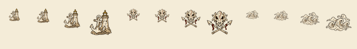
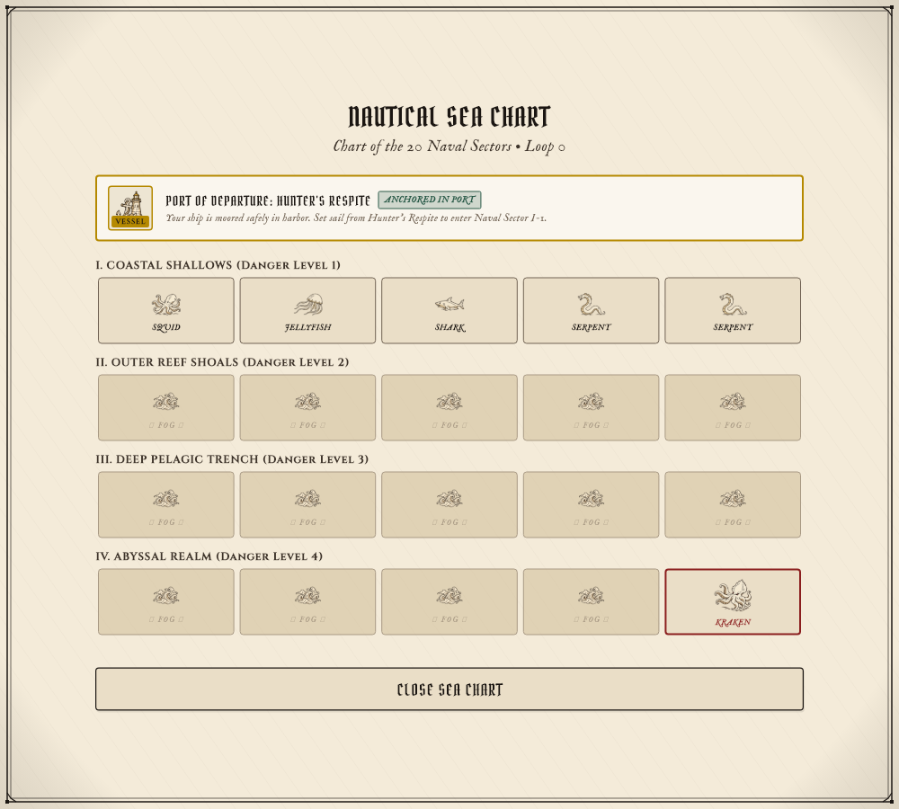
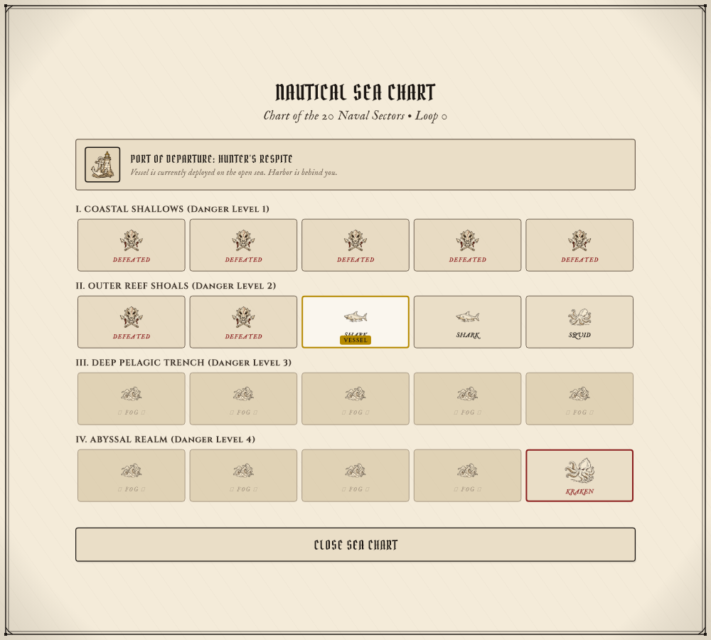

Hunter's Respite anchorage
Dedicated port anchorage tile at the top-left of the Sea Chart
icon_port_haven_map.pngHunter’s Respite anchorage, defeated monster, and uncharted maritime fog. Each PNG is 1024 × 1024 with true alpha transparency and a clear 102-pixel margin on every side.
Full collection · Exact prompts and saved paths · Canvas and alpha checks
Seven chart and navigation tests passed at 1000 × 900 and 480 × 800. Each icon also passed exact canvas and margin-alpha checks.
Dedicated port anchorage tile at the top-left of the Sea Chart
icon_port_haven_map.pngCleared sector where a sea monster was slain
icon_skull_map.pngUnrevealed Sea Chart sectors
icon_fog_map.png
Each group shows 32, 36, 48 and 64 pixels from left to right.

